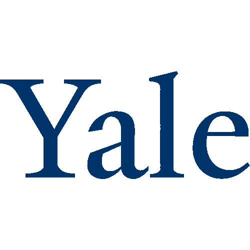

Dhruv Dubey
I research LLM memory and inference, independently since early 2026. DSPM grew out of a simple observation: standard memory strategies treat every token as equally disposable. They're wrong.
All of this — SSPM, DSPM, the evaluation suite, the PyPI package — was built independently, without institutional lab support, on free-tier infrastructure.
Open Source Contributions
Direct technical contributions to research laboratories and foundational systems.

Yale University
Open-source contributor to Pie, a high-performance LLM inference engine developed at Yale's Efficient Computing Lab.
University of Waterloo
Contributed to Pyserini and Anserini, the widely-used IR toolkits at the Castorini Research Group. Identified and merged a fix resolving a core PCL issue.
University of Washington
Contributed to VibeServe, an agentic system that generates bespoke LLM serving stacks end-to-end.
Recognition

Sarvam AI Startup Program 2026
DSPM accepted as an independent research project with dedicated compute support and research credits.
Poster — CAICS 2026
IISc Bengaluru × Argonne National Laboratory · Joint Colloquium on AI and Cybersecurity · 31 Aug – 2 Sep 2026 · Funded by U.S. Dept of State.